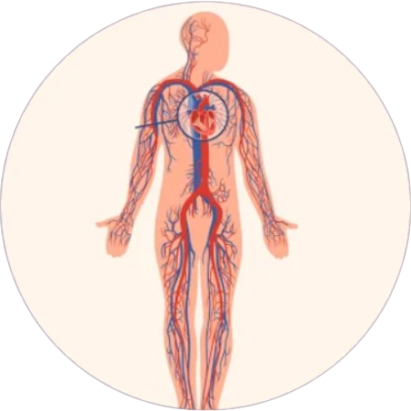

Navigating Diagnostic Angiography: Understanding Procedures, Benefits, and Preparing for Your Appointment
Diagnostic angiography is a crucial medical procedure that provides detailed real-time images of blood vessels using catheters and contrast dye. It helps diagnose limb vessel conditions such as blockages, aneurysms, and abnormal vessel formations with precision.
Early identification allows prompt and targeted medical treatment.
Reduces the risk of chronic ulcers, gangrene, and limb amputation caused by poor blood circulation.
Enhances long-term leg & hand vessels health and patient outcomes.

Our clinic combines specialized expertise, advanced diagnostic technology, and a compassionate patient-focused approach to ensure accurate diagnosis and optimal care throughout the angiography process.
Diagnostic angiography is minimally invasive and plays a vital role in early detection and treatment planning. Proper preparation ensures accuracy and safety.
Controls blood pressure, cholesterol, and clot risk
Interventional procedures to open narrowed or blocked arteries, often performed during or after diagnostic angiography.
Surgical intervention to create new pathways for blood flow, bypassing blocked or narrowed arteries, particularly in severe cases.
Regular check-ups and follow-up diagnostic tests to monitor blood flow, assess healing, adjust treatment plans, and prevent vein-related complications.
Take the first step toward healing by scheduling a consultation with our experts at SLVC Clinic. We are here to guide you through a tailored treatment plan that meets your unique needs.
Book Appointment